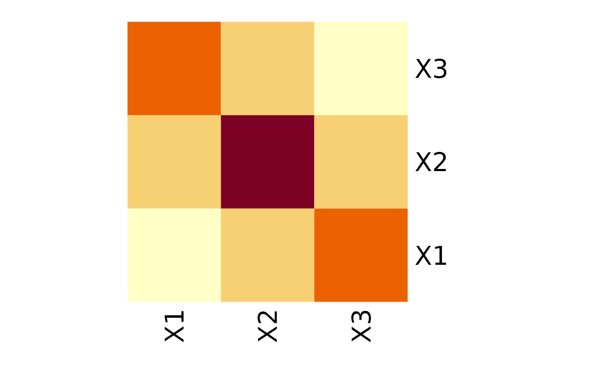

The problem
Quite often, we have too little data to perform valid inference. Consider the situation with multivariate Gaussian distribution, where we have few observations compared to the number of variables. That’s the case for graphical models used in biology or medicine. In such a setting, the usual way of finding the covariance matrix (the maximum likelihood method) isn’t statistically applicable. What now?
Invariance by permutation
Quite often, some variables can be used interchangeably. In the multivariate Gaussian case, it would mean that they have the same variances and covariances with other respective variables. For instance, in the following matrix, variables X1 and X3 are interchangeable:

Now, we can state this interchangeability property in terms of permutations. In our case, swapping the first with the third row and then swapping the first and third columns results in the same matrix. In other words, this matrix is invariant by permutation (1->3, 3->1). Or in cyclic form (1,3).
Of course, in the samples collected in the real world, no perfect equalities will be observed. Still, if the respective values in the (poorly) estimated covariance matrix were close, adopting a particular assumption about invariance by permutation would be a reasonable step.
Package gips
We propose creating a set of constraints on the covariance matrix so that the maximum likelihood method can be used after all. The constraint we consider is - none other than - invariance under permutation symmetry.
This package provides a way to find a reasonable permutation to be used as a constraint in covariance matrix estimation. In this case, reasonable means such that maximizes the Bayesian posterior distribution when using Wishart distribution on symmetric, positive definite matrices as a prior. The idea, exact formulas, and algorithm sketch contribute to PAPER.